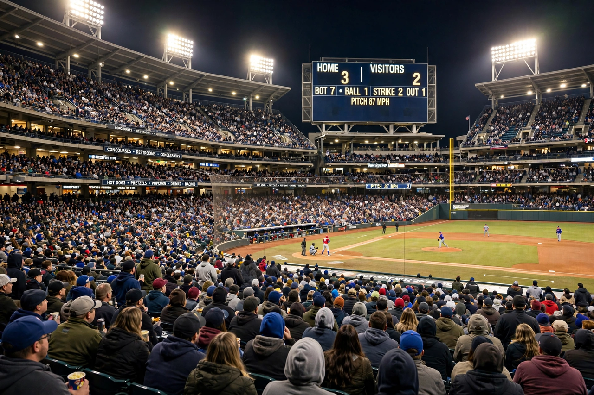

World Series

The World Series is the annual championship series of Major League Baseball in the United States and Canada, contested since 1903 between the champions of the National League and the American League in a best-of-seven playoff.
1989
The 1989 Series between the Oakland Athletics and San Francisco Giants — the 'Bay Bridge Series' — is remembered for its interruption by the Loma Prieta earthquake of 17 October 1989, which struck minutes before Game 3 and postponed the series for ten days. Oakland won the series.